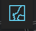
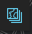
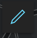

Population
Word Cloud of OwnerName by Area
SVI & SLAMM affected Area Correlation Matrix
Percentile ranking: 0.9 means it is more vulnerable than 90% of census tract. See Document here
RPL_THEMES : Overall vulnerability percentile ranking
RPL_THEME3 : Percentile ranking for Minority Status/Language
RPL_THEME1: Percentile ranking for Socioeconomic vulnerability
Sx_yyyy : The SLAMM deterministic result Marsh affected area in [Sx] sea level Rise.
Example: S1_2040 means deterministic result affected area under low sea level rise in 2040
Adjust the Bandwidth to see Kernel Density.The light part of the kernel density represent high density of point. You can identify cluster easily.NYC Coastal Flooding Planner
Purpose
The destruction wreaked by Hurricane Sandy and global sea level rise shed light on the importance of developing infrastructure that will reduce flooding damage and counter tidal erosion in New York City. This tool is meant to aid city employees in pinpointing the conversion of lots of land into salt marshes, which are an effective means of reducing tidal erosion, while also displaying its associated costs and benefits. It is also meant to inform citizens on the flood risk levels in New York City, which could impact their daily lives.
What is NYC Coastal Flooding Planner
NYC Coastal Flooding Planner is a WebGIS application provide visualization and analysis function for various different sources of data related to coastal marsh, which includes SLAMM model results, Social vulnerability index, pluto landuse data and census tract demorgraphic data. It integrated large amount of pre-processed data and quick function such as query data by drawing, dynamic data-driven dashboards, time and probability sliders and animation.
How the Flooding Planner was built
The layout framwork of the tool is built by using dojo the Map and function inside the map are built by using Arcgis Javascript API. We used ArcGIS online portal to host all of our data, which have already been cleaned. The charts in the dashboard are built by d3.js and chart.js. The tool website is generated using github page.
How to Use
- Supplement Function
button will show a address list. Click on the address will fly you to the pre-defined area on the map. These areas are selected based on the new coastal marsh cluster areas
 button will show a gallery of basemap for you to choose. Choosing one of them will change the basemap. If you want to go back, click and select [Original Basemap]
button contorl the map showing. It will popup a map layer tool box once you click it
- Layer Selction
To understand how to use this function, you need to understand what data we are using.Click to see the Dataset structure in this project
You might also want to see What is SLAMM if you don't understand what [deterministic] and [Uncertainty] mean
Click button in the tool box, if the button becomes orange, it means certain map is chosen to be shown.
Such as [deterministic] means certain deterministic layer will show. Why it does not show anything? Don't worry, to make it shows layer, you have to specify the type and time
The certain map layer is identified by the app according to your selection of type , and whether to show the map
e.g.:[deterministic] + [Low] + [2025] =[deterministic result at low sea level rise rate in 2025]
e.g.:[Uncertainty] + [New Coastal Marsh] + [2040] =[Uncertainty result(New Coastal Marsh) in 2040]
e.g.:[Medium] + [School] + [2085] =[The inundation result of school in NYC at medium SLR rate in 2085]
The vertical slider on the right hand side is for contorling the probability color visual display of Uncertainty map.Any polygon above the slider current value will be shown as auqa Any polygon below 50 points of the slider current value will be invisible
 Use Animation button on infrastructures and see the change of inundation status arcoss year
Use Animation button on infrastructures and see the change of inundation status arcoss year
Get confused with the color? click to see the Legend of all layers you add.
Click [Parking lot] and [SVI & Census Tract] to show the layer right away!
You can use the [Pluto Opacity slider] to show the underlying pluto layer. Click back to to see the color change with the opacity
[Clean Selection] sets everything back to default. Warning: if you find this panel disappear, click [Clean Selection]
- Query & Filter By Drawing
 button open a drawing tool box for you to interact with the data with the geometrical design you draw. Choose one of  to draw on the map. Double click to end the drawing. What happen? The things you draw generate charts on this panel automactically!(I will disappear) Glad you enable me to show up again by clicking [Clean Selection]
to draw on the map. Double click to end the drawing. What happen? The things you draw generate charts on this panel automactically!(I will disappear) Glad you enable me to show up again by clicking [Clean Selection]
- Dashboard Visualization
The charts visualization is based on the data query by the app according to the [Spatial Relationship you select] Try different choices and the buffer slider to see what happen
You might notice that some charts do not show. That is because you are only querying the underlying layer now. [Map pluto] and [SVI Census Tract] are two underlying layers you can query at any time
Try to add [deterministic] and [Ucertainty] and draw an geometry on it to see the charts' change
- Technique
1.Reload the webpage if the app die
2.Display one layer from (deterministic, uncertainty) each time will give you the best result. Display them together will slower down the app
3.Animation is set to have 4s interval if you show deterministic result on the map. 1s if point infrastructure is display only
4.The chart generation speed is according to how large area you draw. Basically, The larger the area you draw, the slower the charts generate. Therefore, don't draw the whole city...
5.The chart generation speed is also affected by internet speed. The faster the internet, the faster it generate
6.If you draw a ploygon but some charts do not show up. It might because you did not choose to display deterministic or uncertainty and it might because there is not data to be query in the area you selected.
7.Zoom in to a smaller area will make deterministic and uncertainty result show up faster
Who we are
This tool was developed by Andrew Hill, Chang Du, Haoming Yang, Sean Andrew Chen, and Yushi Chen for our NYU-Center for Urban Science and Progress Capstone Project titled “Tidal Wetland Conservation Options for Long-Term Land Use Planning for Sea Level Rise” on behalf of the New York City Department of Parks and Recreation.
Acknowledgements
We could not have done our project without the guidance and help of our mentor, Dr. Navid Jafari of Louisiana State University. We also would like to thank the employees of our sponsors: Christopher Haight, Rebecca Swadek, and Bram Gunther from the New York City Department of Parks and Recreation and Terri Matthews and Brenna Hemmings from Town+Gown